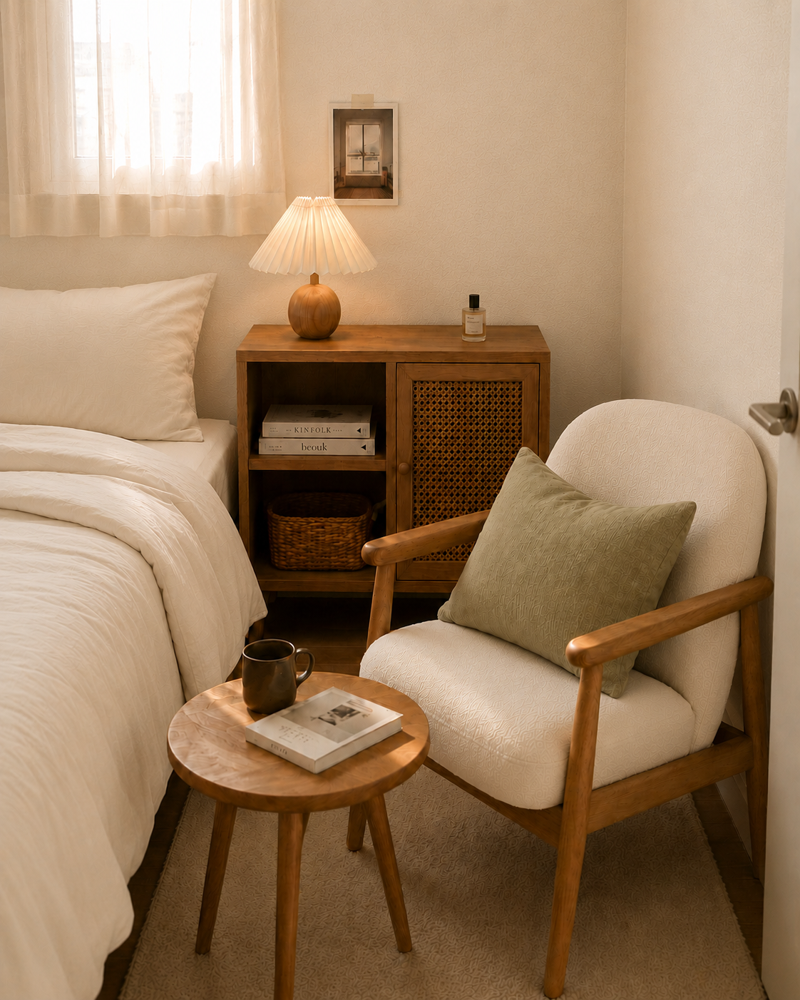
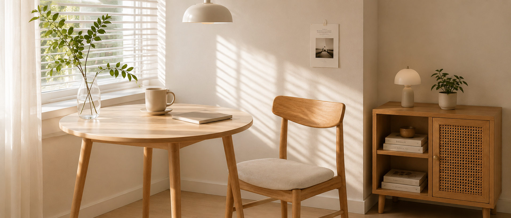
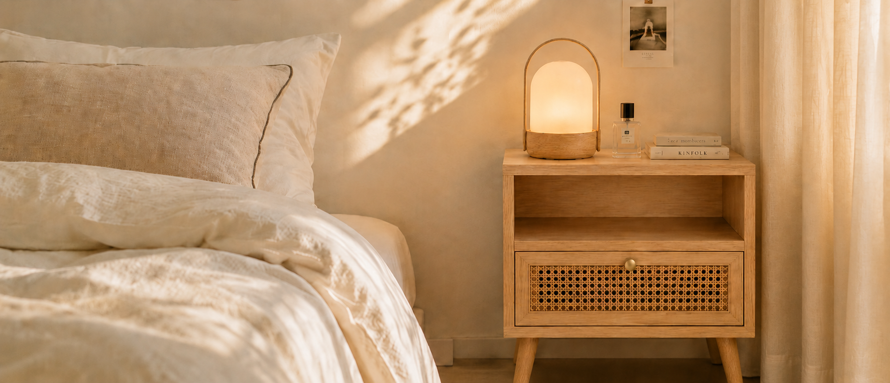
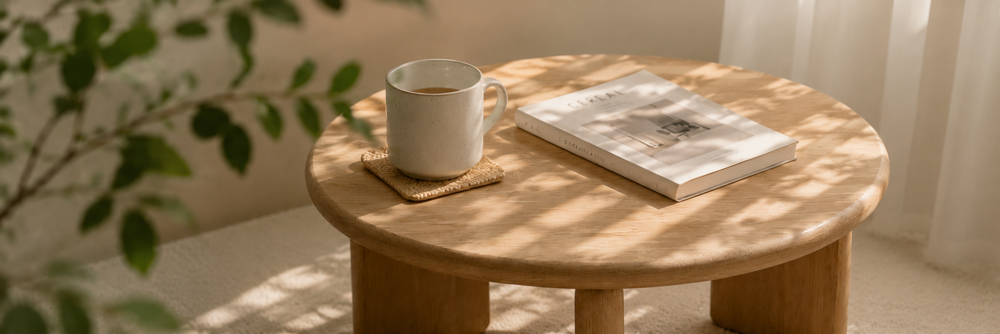
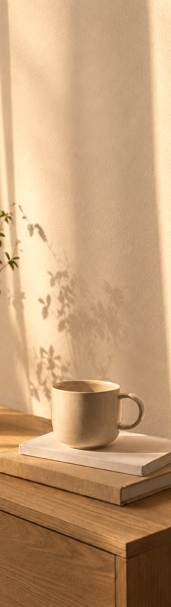
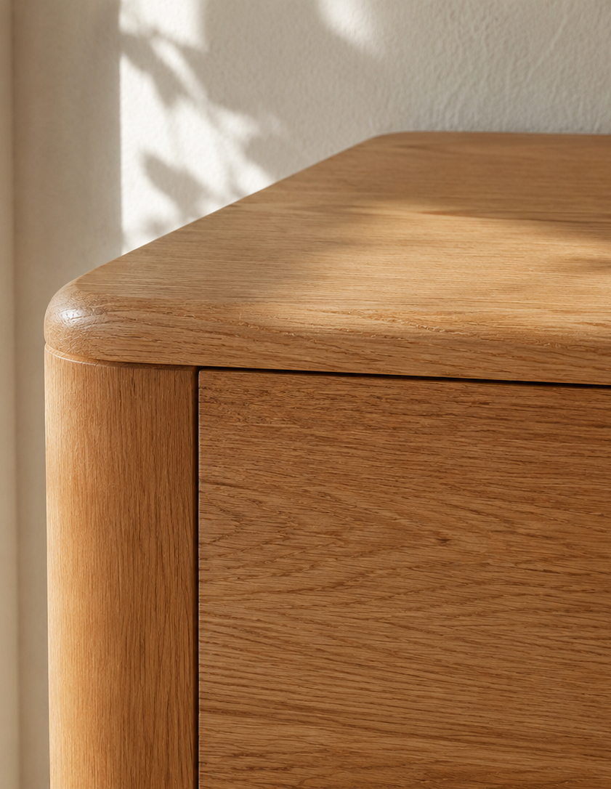

Nesto는 작은 공간을 더 따뜻하고 편안하게 만드는
미니멀 리빙 브랜드입니다.
일상의 크기에 맞는 가구와 생활요소로
작은 집에서도 나다운 흐름을 제안합니다.

원룸, 오피스텔, 작은 방처럼
한정된 면적 안에서 생활하는 사람들에게는
크기보다 쓰임이 좋은 가구가 필요하다고 느꼈습니다.


큰 가구보다 작은 동선,
많은 장식보다 오래 쓰는 구조를 생각합니다.
Nesto는 일상의 움직임을 방해하지 않는
가구와 생활요소를 제안합니다.
Nesto는 공간을 가득 채우기보다
머무는 사람의 편안함이 오래 남을 수 있는
자리를 남기는 것에서 시작합니다.

Nesto는 공간을 더 많이 채우기보다,
생활에 꼭 필요한 자리와 여백을 먼저 생각합니다.
작은 공간일수록 필요한 것만 남기고,
공간을 답답하게 만드는 요소는 덜어냅니다.
유행보다 오래 곁에 둘 수 있는
형태와 소재를 선택합니다.
가구가 공간의 주인공이 되기보다
일상 안에 조용히 어울리도록 설계합니다.

Materials & Mood

오크 우드
공간의 중심을 잡아주는 따뜻한 우드.오크 우드는 단단한 결감과 자연스러운 색으로 공간에 안정감과 온기를 더합니다.Nesto는 오래 사용해도 부담스럽지 않은 나무의 질감과 다른 소재와도 자연스럽게 어울리는 균형을 기준으로 우드를 선택합니다.
01 / 04


 @nesto_furniture
@nesto_furniture hello@nesto.com
hello@nesto.com